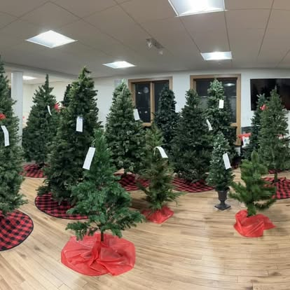
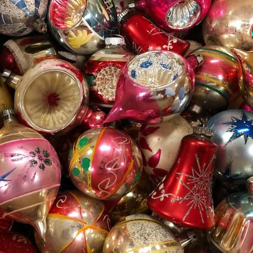
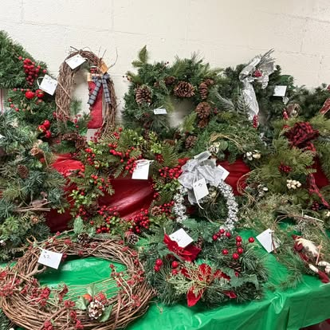
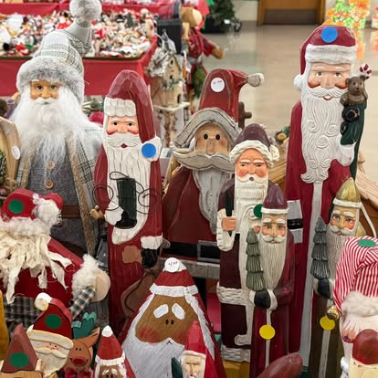

Santas, snowmen and angels. Artificial trees, wreaths and garland. Nativity sets. Christmas village pieces. Boxes of glass ornaments. Lights, ribbon and gift wrap. Christmas dishes, mugs and serving platters. Tablecloths and linens. Cookie tins and baskets. Candles. Outdoor decorations. Christmas books and cards. Ugly sweaters. Handmade crafts. And several rooms of things nobody thought to put on a list.
Planning your visit
- Where is Recycled Christmas held?
- In the fellowship hall and classrooms of First United Methodist Church of Arlington Heights, 1903 E Euclid Ave, Arlington Heights, IL 60004. The sale spreads across several rooms, so leave yourself more time than you think you need.
- Is there an admission charge?
- No. Admission and parking are both free. There is a church parking lot on site.
- What forms of payment are accepted?
- Cash only. Credit cards, debit cards and mobile payments are not accepted. There is no ATM in the building, so bring cash with you.
- When is the best time to come?
- Arrive in the morning for the fullest selection and a fresh pass through the rooms. The sale is a one-day event, so getting there early is the best way to get first pick of the tables.
- Is the sale accessible?
- The building is wheelchair accessible. Strollers are not permitted — the aisles between tables are narrow and the merchandise is breakable.
- Is there food?
- Yes. A bake sale runs alongside the main sale with homemade cookies, breads and candy, also cash only.
- Are the items new or used?
- Almost everything is gently used and donated, priced well below retail. A few tables carry handmade crafts made by volunteers.
- How often does the sale happen?
- Once a year, on a Saturday in November.
Donating your Christmas things
Everything in the sale was donated by neighbors. If your decorations are still good but no longer get used, they can have another Christmas somewhere else.
Gladly accepted
- Artificial trees, wreaths, garland
- Ornaments, lights and working decorations
- Nativity sets and village pieces
- Christmas dishes, linens and serveware
- Holiday clothing, including ugly sweaters
- Unused gift wrap, cards and ribbon
- Christmas books, music and crafts
Please keep
- Broken, chipped or heavily worn items
- Burned-out or damaged light strings
- Live greenery and anything perishable
- Artificial trees missing branches or a stand
Photo gallery




Where the money goes
Recycled Christmas is run entirely by volunteers. Every dollar taken in at the tables supports the United Women in Faith pledge to mission and the local organizations our church community supports.
Recent recipients include
- Bethany House of Hospitality
- Children’s Advocacy Center of North and Northwest Cook County
- C.I.T.Y. of Support
- Faith Feeds Food Pantry
- FamilyForward
- FUMCAH Youth Mission
- GirlForward
- Good Neighbors Network
- Hot Mess Express
- Journeys The Road Home
- Keeping Families Covered
- Kids Above All
- The Kid’s Pantry
- Northwest Center Against Sexual Assault
- Partners for Our Communities
- Shelter Youth & Family Services
- WINGS — Women In Need Growing Stronger.
We are honored to support these amazing organizations each year, and we could not do it without you.
Lending a hand
The sale takes weeks of sorting, pricing and hauling before a single shopper walks in, and a crew to run the rooms and pack up afterward. Shifts are available on weekdays, evenings and weekends, for adults and for helpers age 12 and up.
Tables to borrow and baked goods for the bake sale are always welcome too.